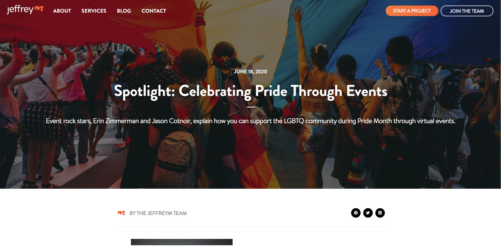
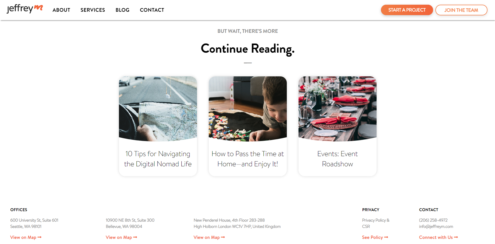
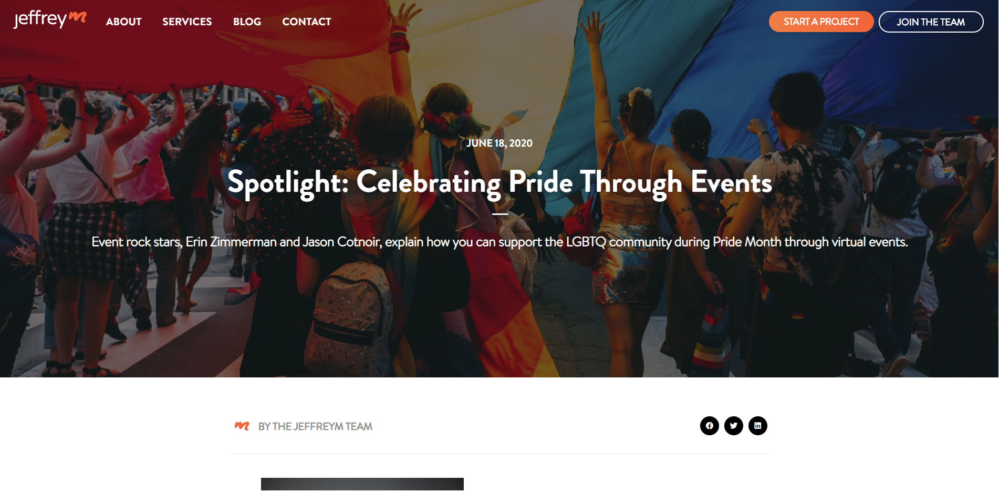
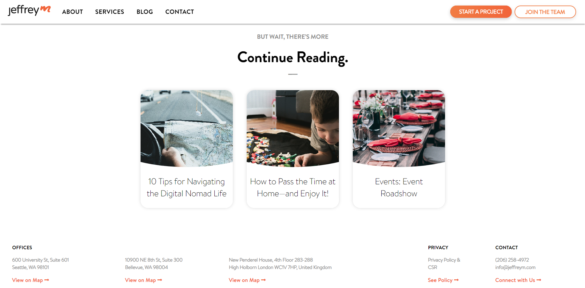

JeffreyM Consulting
November 2019 - Present
 



Background
I started this project in November of 2019. I was approached by a classmate who had a connection with JeffreyM and was contracted to work on implementing their new design onto their website. My friend decided to include me on this project and reached out to me if I would like to participate and I accepted. The goal of the project was to follow a strict design doc and to finish the project by the upcoming Christmas. In addition to the design, we were required to also implement a WordPress CMS so that the website could have a functioning blog.
The process was as follows -
- Meet up once a week with other developer to assign tasks
- Reach out to JeffreyM for questions and status updates
- Develop when possible
- Repeat..
After the project was complete, I was asked if I would like to be officially employed as a web developer for JeffreyM where I am continuing to maintain and implement features to the website when requested.